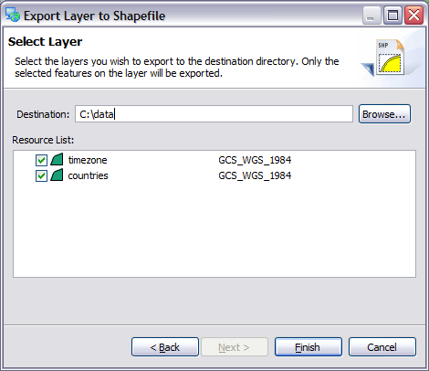

Layer to Shapefile Wizard
Used to export the selected features in a layer to a shapefile. This wizard is often used to
identify a subset of data for later processing.

The results of this wizard are added to the Catalog for your immediate use.
Destination
The location to save the generated shapefile. The filename used will be will be based on the layer
name.
Resource List
List of selected layers:
- Check: you may check off the resources you wish to export
- Name: Layer name, this will be used as the filename of the generated shapefile
- Projection: Shows the projection of the layer; you can change setting to transform the contents
into the requested projection. The projection information will be stored in the resulting prj
file.
Related concepts
Shapefile